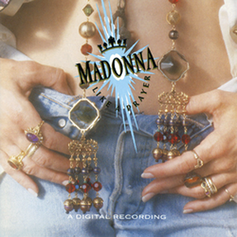
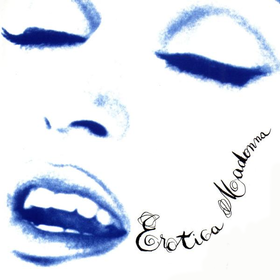
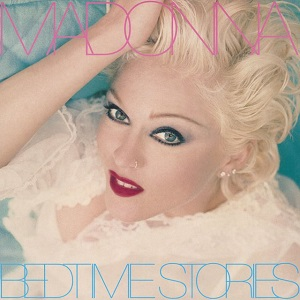
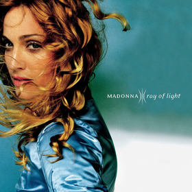
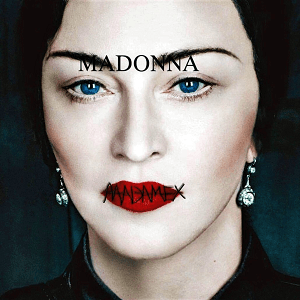

Home
Bio
Music
News
Madame X
Ray of Light Foundation
About
MUSIC VIDEO EVOLUTION
DISCOGRAPHY
1983
Madonna
1984
Like a Virgin
1986
True Blue
1989
Like a Prayer

1992
Erotica

1994
Bedtime Stories

1998
Ray of Light

2000
Music
2003
American Life
2005
Confessions on a dance floor
2008
Hard Candy
2012
MDNA
2015
Rebel Heart
2019
Madame X
